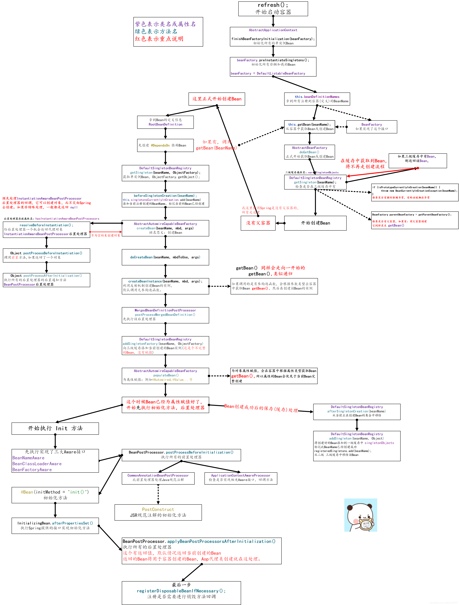

Spring Bean注入详解
一、步骤
起步
public class Application { public static void main(String[] args) { //1、读取配置文件 ApplicationContext context = new ClassPathXmlApplicationContext("Application.xml"); //得到bean A a = context.getBean("a", A.class); B b = context.getBean("b", B.class); } }对象初始化，略过
读取并解析XML文件
public ClassPathXmlApplicationContext( String[] configLocations, boolean refresh, @Nullable ApplicationContext parent) throws BeansException { super(parent); setConfigLocations(configLocations); if (refresh) { //3、refresh()读取xml初始化 refresh(); } } public abstract class AbstractApplicationContext extends DefaultResourceLoader implements ConfigurableApplicationContext { //4、读取并解析xml public void refresh() throws BeansException, IllegalStateException { synchronized (this.startupShutdownMonitor) { //准备上下文 prepareRefresh(); // 告诉子类刷新内部 bean 工厂。 ConfigurableListableBeanFactory beanFactory = obtainFreshBeanFactory(); // 准备 bean 工厂以在此上下文中使用。 prepareBeanFactory(beanFactory); try { // 允许在上下文子类中对 bean 工厂进行后处理。 postProcessBeanFactory(beanFactory); // 调用在上下文中注册为 bean 的工厂处理器。 invokeBeanFactoryPostProcessors(beanFactory); // 注册拦截 bean 创建的 bean 处理器。 registerBeanPostProcessors(beanFactory); // 为此上下文初始化消息源。 initMessageSource(); // 为此上下文初始化事件多播器。 initApplicationEventMulticaster(); // 初始化特定上下文子类中的其他特殊 bean。 onRefresh(); // 检查侦听器 bean 并注册它们。 registerListeners(); // 实例化所有剩余的（非惰性初始化）单例。 finishBeanFactoryInitialization(beanFactory); // 5、初始化beanFactory // 最后一步：发布相应的事件。 finishRefresh(); } catch (BeansException ex) { if (logger.isWarnEnabled()) { logger.warn("Exception encountered during context initialization - " + "cancelling refresh attempt: " + ex); } // 销毁已经创建的单例以避免悬空资源。 destroyBeans(); // Reset 'active' flag.重置“活动”标志。 cancelRefresh(ex); // 将异常传播给调用者。 throw ex; } finally { // 重置 Spring 核心中常见的自省缓存， // 因为我们可能不再需要单例 bean 的元数据了...... resetCommonCaches(); } } } }初始化BeanFactory,最后调用方法进行bean的实例化
//6、初始化BeanFactory，并初始化单例Bean protected void finishBeanFactoryInitialization(ConfigurableListableBeanFactory beanFactory) { // 为此上下文初始化转换服务。 if (beanFactory.containsBean(CONVERSION_SERVICE_BEAN_NAME) && beanFactory.isTypeMatch(CONVERSION_SERVICE_BEAN_NAME, ConversionService.class)) { beanFactory.setConversionService( beanFactory.getBean(CONVERSION_SERVICE_BEAN_NAME, ConversionService.class)); } // 如果之前没有注册过任何 bean 后处理器（例如 PropertyPlaceholderConfigurer bean）， // 则注册一个默认的嵌入值解析器：此时，主要用于解析注释属性值。 if (!beanFactory.hasEmbeddedValueResolver()) { beanFactory.addEmbeddedValueResolver(strVal -> getEnvironment().resolvePlaceholders(strVal)); } // 尽早初始化 LoadTimeWeaverAware bean，以便尽早注册它们的转换器。 String[] weaverAwareNames = beanFactory.getBeanNamesForType(LoadTimeWeaverAware.class, false, false); for (String weaverAwareName : weaverAwareNames) { getBean(weaverAwareName); } // 停止使用临时 ClassLoader 进行类型匹配。 beanFactory.setTempClassLoader(null); // 允许缓存所有 bean 定义元数据，而不是期望进一步的更改。 beanFactory.freezeConfiguration(); // 实例化所有剩余的（非惰性初始化）单例。 beanFactory.preInstantiateSingletons(); //7、beanFactory的实例化已经完成，接下来实例化bean }预实例化单例
public void preInstantiateSingletons() throws BeansException { if (logger.isTraceEnabled()) { logger.trace("Pre-instantiating singletons in " + this); } // 创建一个数组，里面是将要实例化的bean信息 List<String> beanNames = new ArrayList<>(this.beanDefinitionNames); // 触发所有非惰性单例 bean 的初始化... for (String beanName : beanNames) { RootBeanDefinition bd = getMergedLocalBeanDefinition(beanName); if (!bd.isAbstract() && bd.isSingleton() && !bd.isLazyInit()) { if (isFactoryBean(beanName)) { Object bean = getBean(FACTORY_BEAN_PREFIX + beanName); if (bean instanceof FactoryBean) { FactoryBean<?> factory = (FactoryBean<?>) bean; boolean isEagerInit; if (System.getSecurityManager() != null && factory instanceof SmartFactoryBean) { isEagerInit = AccessController.doPrivileged( (PrivilegedAction<Boolean>) ((SmartFactoryBean<?>) factory)::isEagerInit, getAccessControlContext()); } else { isEagerInit = (factory instanceof SmartFactoryBean && ((SmartFactoryBean<?>) factory).isEagerInit()); } if (isEagerInit) { getBean(beanName); } } } else { getBean(beanName); //8、得到Bean } } }使用getBean()实例化对象
public Object getBean(String name) throws BeansException { return doGetBean(name, null, null, false); //9、getBean()调用doGetBean()来实际运行 } /** * 返回指定 bean 的一个实例，该实例可以是共享的，也可以是独立的。 * @param name 要检索的 bean 的名称 * @param requiredType 需要检索的 bean 类型 * @param args 使用显式参数创建 bean 实例时使用的参数（仅在创建新实例而不是检索现有实例时应用） * @param typeCheckOnly 是否获取实例进行类型检查，而不是实际使用 */ protected <T> T doGetBean( String name, @Nullable Class<T> requiredType, @Nullable Object[] args, boolean typeCheckOnly) throws BeansException { //检查别名 String beanName = transformedBeanName(name); Object bean; // 先去缓存中查询一下是否已经实例化 Object sharedInstance = getSingleton(beanName); if (sharedInstance != null && args == null) { if (logger.isTraceEnabled()) { if (isSingletonCurrentlyInCreation(beanName)) { logger.trace("Returning eagerly cached instance of singleton bean '" + beanName + "' that is not fully initialized yet - a consequence of a circular reference"); } else { logger.trace("Returning cached instance of singleton bean '" + beanName + "'"); } } bean = getObjectForBeanInstance(sharedInstance, name, beanName, null); } else { // 如果我们已经在创建这个 bean 实例则失败 抛出：BeanCurrentlyInCreationException if (isPrototypeCurrentlyInCreation(beanName)) { throw new BeanCurrentlyInCreationException(beanName); } // 检查此工厂中是否存在 bean 定义（bean是否有父子包含关系） BeanFactory parentBeanFactory = getParentBeanFactory(); if (parentBeanFactory != null && !containsBeanDefinition(beanName)) { // Not found -> check parent. String nameToLookup = originalBeanName(name); if (parentBeanFactory instanceof AbstractBeanFactory) { return ((AbstractBeanFactory) parentBeanFactory).doGetBean( nameToLookup, requiredType, args, typeCheckOnly); } else if (args != null) { // Delegation to parent with explicit args. return (T) parentBeanFactory.getBean(nameToLookup, args); } else if (requiredType != null) { // No args -> delegate to standard getBean method. return parentBeanFactory.getBean(nameToLookup, requiredType); } else { return (T) parentBeanFactory.getBean(nameToLookup); } } if (!typeCheckOnly) { //9、将Bean标记为已创建，接下来就要开始创建了 markBeanAsCreated(beanName); } try { //创建Bean，RootBeanDefinition就是在Bean容器中抽象的Bean RootBeanDefinition mbd = getMergedLocalBeanDefinition(beanName); checkMergedBeanDefinition(mbd, beanName, args); // 保证当前 bean 所依赖的 bean 的初始化。 String[] dependsOn = mbd.getDependsOn(); if (dependsOn != null) { //false for (String dep : dependsOn) { if (isDependent(beanName, dep)) { throw new BeanCreationException(mbd.getResourceDescription(), beanName, "Circular depends-on relationship between '" + beanName + "' and '" + dep + "'"); } registerDependentBean(dep, beanName); try { getBean(dep); } catch (NoSuchBeanDefinitionException ex) { throw new BeanCreationException(mbd.getResourceDescription(), beanName, "'" + beanName + "' depends on missing bean '" + dep + "'", ex); } } } // 创建Bean实例 if (mbd.isSingleton()) { //判断是否是单例 sharedInstance = getSingleton(beanName, () -> { try { //-----------------------------重点------------------------------------------------------------- //10、创建Bean，详见注2 return createBean(beanName, mbd, args); } catch (BeansException ex) { //从单例缓存中显式删除实例：它可能已被创建放在了eagerly缓存中，以允许循环引用解析。还要删除任何接收到对 bean 的临时引用的 bean。 destroySingleton(beanName); throw ex; } }); bean = getObjectForBeanInstance(sharedInstance, name, beanName, mbd); } else if (mbd.isPrototype()) { // It's a prototype -> create a new instance. Object prototypeInstance = null; try { beforePrototypeCreation(beanName); prototypeInstance = createBean(beanName, mbd, args); } finally { afterPrototypeCreation(beanName); } bean = getObjectForBeanInstance(prototypeInstance, name, beanName, mbd); } else { String scopeName = mbd.getScope(); if (!StringUtils.hasLength(scopeName)) { throw new IllegalStateException("No scope name defined for bean ´" + beanName + "'"); } Scope scope = this.scopes.get(scopeName); if (scope == null) { throw new IllegalStateException("No Scope registered for scope name '" + scopeName + "'"); } try { Object scopedInstance = scope.get(beanName, () -> { beforePrototypeCreation(beanName); try { return createBean(beanName, mbd, args); } finally { afterPrototypeCreation(beanName); } }); bean = getObjectForBeanInstance(scopedInstance, name, beanName, mbd); } catch (IllegalStateException ex) { throw new BeanCreationException(beanName, "Scope '" + scopeName + "' is not active for the current thread; consider " + "defining a scoped proxy for this bean if you intend to refer to it from a singleton", ex); } } } catch (BeansException ex) { cleanupAfterBeanCreationFailure(beanName); throw ex; } } // Check if required type matches the type of the actual bean instance. if (requiredType != null && !requiredType.isInstance(bean)) { try { T convertedBean = getTypeConverter().convertIfNecessary(bean, requiredType); if (convertedBean == null) { throw new BeanNotOfRequiredTypeException(name, requiredType, bean.getClass()); } return convertedBean; } catch (TypeMismatchException ex) { if (logger.isTraceEnabled()) { logger.trace("Failed to convert bean '" + name + "' to required type '" + ClassUtils.getQualifiedName(requiredType) + "'", ex); } throw new BeanNotOfRequiredTypeException(name, requiredType, bean.getClass()); } } return (T) bean; }6
7
注
注1：
这段代码是为了去一级缓存中查询一下Bean对象是否在一级缓存中，或者是否已经创建但未完成注入。==>结果是null
@Override
@Nullable
public Object getSingleton(String beanName) {
return getSingleton(beanName, true);
}
/**
* 返回在给定名称下注册的（原始）单例对象。
* 检查已经实例化的单例，还允许对当前创建的单例进行早期引用（解决循环引用）。
*/
@Nullable
protected Object getSingleton(String beanName, boolean allowEarlyReference) {
// 快速检查没有完整实例化的现有实例
// 首先从singletonObjects（一级缓存）中查找
Object singletonObject = this.singletonObjects.get(beanName);
//如果已经实例化但未完成注入则继续。
if (singletonObject == null && isSingletonCurrentlyInCreation(beanName)) { //false
// 如果一级缓存中没有再去二级缓存中查找
singletonObject = this.earlySingletonObjects.get(beanName);
if (singletonObject == null && allowEarlyReference) {
synchronized (this.singletonObjects) {
// 在完整的单例锁中一致地创建早期引用
singletonObject = this.singletonObjects.get(beanName);
if (singletonObject == null) {
singletonObject = this.earlySingletonObjects.get(beanName);
if (singletonObject == null) {
ObjectFactory<?> singletonFactory = this.singletonFactories.get(beanName);
if (singletonFactory != null) {
singletonObject = singletonFactory.getObject();
this.earlySingletonObjects.put(beanName, singletonObject);
this.singletonFactories.remove(beanName);
}
}
}
}
}
}
return singletonObject;
}注2：
此类的中心方法：创建 bean 实例、填充 bean 实例、应用后处理器等。
protected Object createBean(String beanName, RootBeanDefinition mbd, @Nullable Object[] args)
throws BeanCreationException {
if (logger.isTraceEnabled()) {
logger.trace("Creating instance of bean '" + beanName + "'");
}
RootBeanDefinition mbdToUse = mbd;
//解析Ben：确保此时实际解析了 bean 类，并克隆 bean 定义以防动态解析的 Class 无法存储在共享的合并 bean 定义中。
Class<?> resolvedClass = resolveBeanClass(mbd, beanName);
if (resolvedClass != null && !mbd.hasBeanClass() && mbd.getBeanClassName() != null) {
mbdToUse = new RootBeanDefinition(mbd);
mbdToUse.setBeanClass(resolvedClass);
}
// Prepare method overrides.
try {
mbdToUse.prepareMethodOverrides();
}
catch (BeanDefinitionValidationException ex) {
throw new BeanDefinitionStoreException(mbdToUse.getResourceDescription(),
beanName, "Validation of method overrides failed", ex);
}
try {
// Give BeanPostProcessors a chance to return a proxy instead of the target bean instance.
Object bean = resolveBeforeInstantiation(beanName, mbdToUse);
if (bean != null) {
return bean;
}
}
catch (Throwable ex) {
throw new BeanCreationException(mbdToUse.getResourceDescription(), beanName,
"BeanPostProcessor before instantiation of bean failed", ex);
}
try {
//---------------------------------------重点-------------------------------------------------------
//创建Ben
Object beanInstance = doCreateBean(beanName, mbdToUse, args);
if (logger.isTraceEnabled()) {
logger.trace("Finished creating instance of bean '" + beanName + "'");
}
return beanInstance;
}
catch (BeanCreationException | ImplicitlyAppearedSingletonException ex) {
// A previously detected exception with proper bean creation context already,
// or illegal singleton state to be communicated up to DefaultSingletonBeanRegistry.
throw ex;
}
catch (Throwable ex) {
throw new BeanCreationException(
mbdToUse.getResourceDescription(), beanName, "Unexpected exception during bean creation", ex);
}
}
//实际创建指定Bean
protected Object doCreateBean(String beanName, RootBeanDefinition mbd, @Nullable Object[] args)
throws BeanCreationException {
// Instantiate the bean.
BeanWrapper instanceWrapper = null;
if (mbd.isSingleton()) {
instanceWrapper = this.factoryBeanInstanceCache.remove(beanName);
}
if (instanceWrapper == null) {
//-------------------重点-------------------------------------------------------------------------
//创建Bean实例
instanceWrapper = createBeanInstance(beanName, mbd, args);
}
Object bean = instanceWrapper.getWrappedInstance();
Class<?> beanType = instanceWrapper.getWrappedClass();
if (beanType != NullBean.class) {
mbd.resolvedTargetType = beanType;
}
// Allow post-processors to modify the merged bean definition.
synchronized (mbd.postProcessingLock) {
if (!mbd.postProcessed) {
try {
applyMergedBeanDefinitionPostProcessors(mbd, beanType, beanName);
}
catch (Throwable ex) {
throw new BeanCreationException(mbd.getResourceDescription(), beanName,
"Post-processing of merged bean definition failed", ex);
}
mbd.postProcessed = true;
}
}
// Eagerly cache singletons to be able to resolve circular references
// even when triggered by lifecycle interfaces like BeanFactoryAware.
boolean earlySingletonExposure = (mbd.isSingleton() && this.allowCircularReferences &&
isSingletonCurrentlyInCreation(beanName));
if (earlySingletonExposure) {
if (logger.isTraceEnabled()) {
logger.trace("Eagerly caching bean '" + beanName +
"' to allow for resolving potential circular references");
}
addSingletonFactory(beanName, () -> getEarlyBeanReference(beanName, mbd, bean));
}
// Initialize the bean instance.
Object exposedObject = bean;
try {
populateBean(beanName, mbd, instanceWrapper);
exposedObject = initializeBean(beanName, exposedObject, mbd);
}
catch (Throwable ex) {
if (ex instanceof BeanCreationException && beanName.equals(((BeanCreationException) ex).getBeanName())) {
throw (BeanCreationException) ex;
}
else {
throw new BeanCreationException(
mbd.getResourceDescription(), beanName, "Initialization of bean failed", ex);
}
}
if (earlySingletonExposure) {
Object earlySingletonReference = getSingleton(beanName, false);
if (earlySingletonReference != null) {
if (exposedObject == bean) {
exposedObject = earlySingletonReference;
}
else if (!this.allowRawInjectionDespiteWrapping && hasDependentBean(beanName)) {
String[] dependentBeans = getDependentBeans(beanName);
Set<String> actualDependentBeans = new LinkedHashSet<>(dependentBeans.length);
for (String dependentBean : dependentBeans) {
if (!removeSingletonIfCreatedForTypeCheckOnly(dependentBean)) {
actualDependentBeans.add(dependentBean);
}
}
if (!actualDependentBeans.isEmpty()) {
throw new BeanCurrentlyInCreationException(beanName,
"Bean with name '" + beanName + "' has been injected into other beans [" +
StringUtils.collectionToCommaDelimitedString(actualDependentBeans) +
"] in its raw version as part of a circular reference, but has eventually been " +
"wrapped. This means that said other beans do not use the final version of the " +
"bean. This is often the result of over-eager type matching - consider using " +
"'getBeanNamesForType' with the 'allowEagerInit' flag turned off, for example.");
}
}
}
}
// Register bean as disposable.
try {
registerDisposableBeanIfNecessary(beanName, bean, mbd);
}
catch (BeanDefinitionValidationException ex) {
throw new BeanCreationException(
mbd.getResourceDescription(), beanName, "Invalid destruction signature", ex);
}
return exposedObject;
}
//选择适当策略为指定Bean生成一个实例
protected BeanWrapper createBeanInstance(String beanName, RootBeanDefinition mbd, @Nullable Object[] args) {
// 确保此时实际解析了 bean 类。
Class<?> beanClass = resolveBeanClass(mbd, beanName);
if (beanClass != null && !Modifier.isPublic(beanClass.getModifiers()) && !mbd.isNonPublicAccessAllowed()) {
throw new BeanCreationException(mbd.getResourceDescription(), beanName,
"Bean class isn't public, and non-public access not allowed: " + beanClass.getName());
}
Supplier<?> instanceSupplier = mbd.getInstanceSupplier();
if (instanceSupplier != null) {
return obtainFromSupplier(instanceSupplier, beanName);
}
if (mbd.getFactoryMethodName() != null) {
return instantiateUsingFactoryMethod(beanName, mbd, args);
}
// Shortcut when re-creating the same bean...
boolean resolved = false;
boolean autowireNecessary = false;
if (args == null) {
synchronized (mbd.constructorArgumentLock) {
if (mbd.resolvedConstructorOrFactoryMethod != null) {
resolved = true;
autowireNecessary = mbd.constructorArgumentsResolved;
}
}
}
if (resolved) {
if (autowireNecessary) {
return autowireConstructor(beanName, mbd, null, null);
}
else {
return instantiateBean(beanName, mbd);
}
}
// Candidate constructors for autowiring?
Constructor<?>[] ctors = determineConstructorsFromBeanPostProcessors(beanClass, beanName);
if (ctors != null || mbd.getResolvedAutowireMode() == AUTOWIRE_CONSTRUCTOR ||
mbd.hasConstructorArgumentValues() || !ObjectUtils.isEmpty(args)) {
return autowireConstructor(beanName, mbd, ctors, args);
}
// Preferred constructors for default construction?
ctors = mbd.getPreferredConstructors();
if (ctors != null) {
return autowireConstructor(beanName, mbd, ctors, null);
}
// No special handling: simply use no-arg constructor.
return instantiateBean(beanName, mbd);
}大致流程图

详细流程图
Spring Bean注入详解
https://ww-ccw.github.io/2022/09/06/spring/Bean生命周期/Bean生命周期/